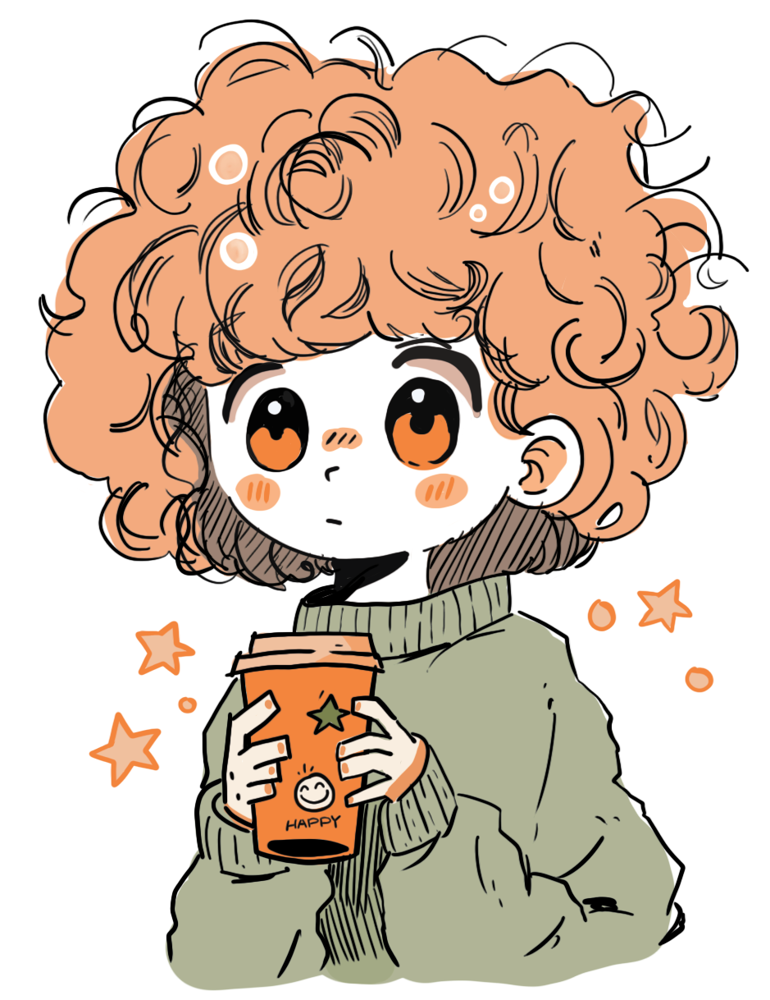

About
안녕하세요. 마니입니다.
창의적인 설계를 통해 공간에 감동을 전하는 일을 하고 있습니다.
현재 프리랜서로 건축 설계와 공간 디자인, 일러스트 작업을 진행하고 있으며,
각 프로젝트에 맞는 최적의 결과를 위해 함께 고민하고 있습니다.
협업이나 의뢰에 관심 있으신 분들은 아래 연락처로 편하게 문의해주세요.
Hello, I am Mani.
I create spaces that inspire and move people through creative design.
As a freelancer, I work on architectural design, spatial planning, and illustration projects,
always striving to deliver the best results tailored to each project.
If you’re interested in collaboration or commissions, feel free to contact me below.
lkaysoonstudio@gmail.com
